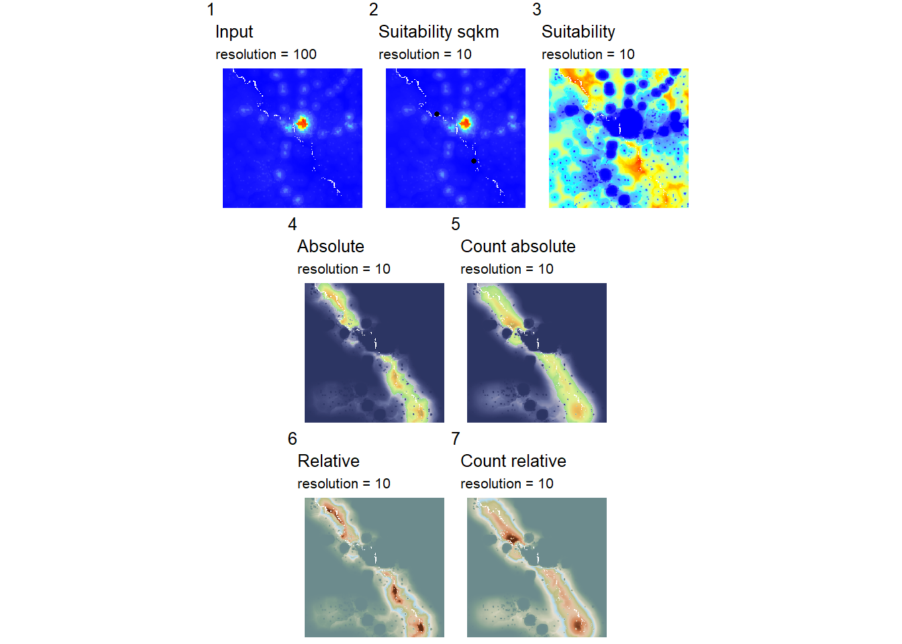
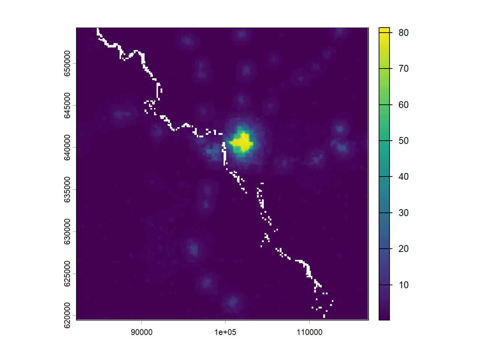
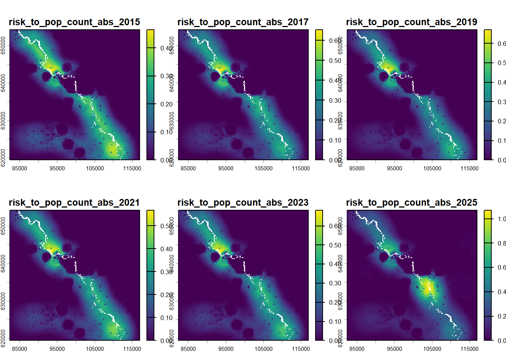
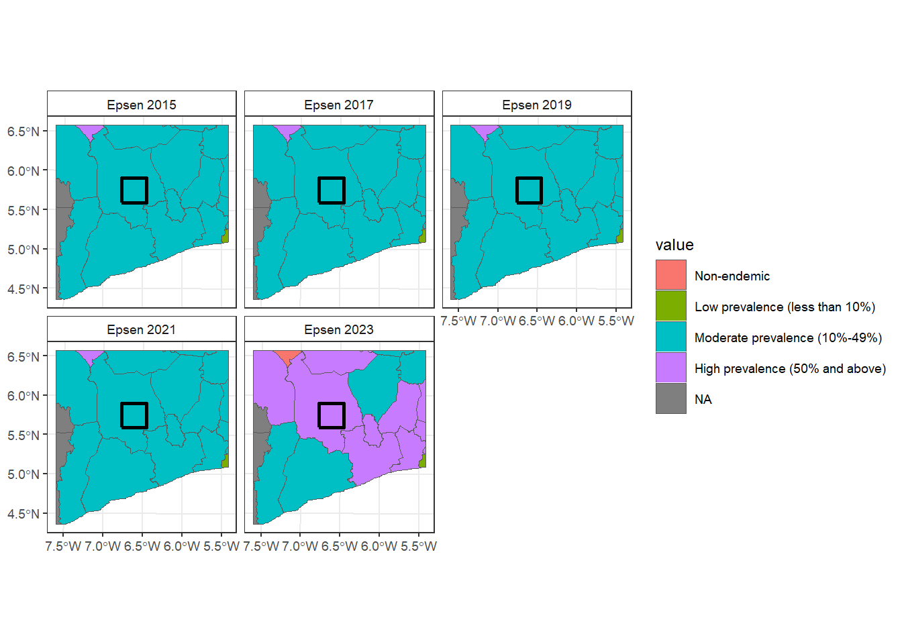

Background
In the Bas Sassandra region of Cote d’Ivoire two hydroelectic dams were recently built:
- Gribo-Popoli Hydroelectric Power Station started construction in 2018 and finished in mid 2024
- Soubre Hydroelectric Power Station which started construction in 2016 and finished in 2018.
This leaves 4 interesting timepoints for comparing the schistosomiasis risk in the region:
- 2015 before any construction
- 2017 during Soubre Dam construction / before Gribo-Popoli
- 2019 Soubre construction complete/Gribo-Popoli under construction
- 2025 Gribo-Popoli complete
Data used
The rasters used in this analysis were downloaded using Google Earth Engine. The code for this is included in the appendix.


In the 6/30 model run used the 2015 population data to keep consistent across run.


Risk assessments
Risk
The InVEST model outputs:
- convolved_hab_risk
- normalized_Convolved_risk
- risk_to_pop_abs
- risk_to_pop_count_abs
- risk_to_pop_count_rel
- risk_to_pop_rel
For the purposes of comparing between scenarios (e.g., our timepoints) the most useful outputs for comparing between scenarios are Convolved habitat risk and risk to population count relative, as the normalized risk is normalized to within the scenario (bounded [0,1]) and risk to pop count rel is the only prediction at population-scale.


Summary table for the total AOI.

Suitability


Summary table for the total AOI.


Correlation between suitability and risk


Delve into population
Code
## plot all the pop inputs/intermed/outputs in order
p1 <- ggplot()+
geom_spatraster(data=r_pop$population_2015) +
scale_fill_grass_c(palette = "bcyr") +
labs(title = "Input",
subtitle = paste("resolution =", res(r_pop)[[1]]))
p2 <- ggplot()+
geom_spatraster(data=r_suit$population_suit_sqkm_2015) +
geom_spatvector(data=dam_locs, col="black") +
scale_fill_grass_c(palette = "bcyr") +
labs(title = "Suitability sqkm",
subtitle = paste("resolution =", res(r_suit)[[1]]))
p3 <- ggplot()+
geom_spatraster(data=r_suit$population_suitability_2015) +
scale_fill_grass_c(palette = "bcyr") +
labs(title = "Suitability",
subtitle = paste("resolution =", res(r_suit)[[1]]))
p4 <- ggplot()+
geom_spatraster(data=r_risk$risk_to_pop_abs_2015) +
scale_fill_hypso_c(palette = "arctic") +
labs(title = "Absolute",
subtitle = paste("resolution =", res(r_risk)[[1]]))
p5 <- ggplot()+
geom_spatraster(data=r_risk$risk_to_pop_count_abs_2015) +
scale_fill_hypso_c(palette = "arctic") +
labs(title = "Count absolute",
subtitle = paste("resolution =", res(r_risk)[[1]]))
p6 <- ggplot()+
geom_spatraster(data=r_risk$risk_to_pop_rel_2015) +
scale_fill_hypso_c(palette = "nordisk-familjebok") +
labs(title = "Relative",
subtitle = paste("resolution =", res(r_risk)[[1]]))
p7 <- ggplot()+
geom_spatraster(data=r_risk$risk_to_pop_count_rel_2015) +
scale_fill_hypso_c(palette = "nordisk-familjebok") +
labs(title = "Count relative",
subtitle = paste("resolution =", res(r_risk)[[1]]))
(p1 + p2 + p3) / (p4 + p5) / (p6 + p7) +
plot_annotation(tag_levels = 1) &
theme_void(base_size = 8) & theme(legend.position = "none")
Code
rm(p1, p2, p3, p4, p5, p6, p7)
## check ha to km2
tmp <- r_suit$population_suit_sqkm_2015 /100
tmp <- aggregate(tmp, fact = 10)
plot(tmp)
Code
## check risk to pop count abs if rescale
tmp <- r_risk[[which(str_detect(names(r_risk), "risk_to_pop_count_abs"))]]
tmp <- tmp /100
tmp <- aggregate(tmp, fact = 10)
plot(tmp)
Code
risk_to_pop_count_abs_rescaled = global(tmp, fun = c("sum", "mean", "sd"), na.rm=T) %>%
rownames_to_column("var") %>%
mutate(var = paste0(var, "_rescaled"))
risk_to_pop_count_abs_rescaled %>%
mutate(prop_pos = sum/round(input_summary$`sum1 worldpop`[1])) var sum mean sd prop_pos
1 risk_to_pop_count_abs_2015_rescaled 7948.705 0.06674760 0.1028740 0.03725141
2 risk_to_pop_count_abs_2017_rescaled 8905.218 0.07477972 0.1185187 0.04173408
3 risk_to_pop_count_abs_2019_rescaled 8351.185 0.07012735 0.1140615 0.03913762
4 risk_to_pop_count_abs_2021_rescaled 8369.061 0.07027745 0.1112942 0.03922139
5 risk_to_pop_count_abs_2023_rescaled 9438.703 0.07925955 0.1262943 0.04423424
6 risk_to_pop_count_abs_2025_rescaled 12053.766 0.10121900 0.1737878 0.05648967Code
## extents change slightly so this doesn't work
# tmp$population_suit_sqkm_2015 == r_pop$population_2015
# par(mfrow = c(1, 2))
# plot(tmp); plot(r_pop$population_2015)
## multiply layers??
## multiply summary tables following workflow
tmp <- rbind(
data.frame(var= "input_population_2015",
sum = input_summary$`sum1 worldpop`[1],
mean = NA, sd = NA),
s_res %>% filter(year == 2015) %>% select(-year),
g_res %>% filter(year == 2015) %>% select(-year),
risk_to_pop_count_abs_rescaled
) %>%
pivot_longer(-var, names_to = "metric", values_to = "value") %>%
pivot_wider(names_from = "var", values_from = "value")
## pop suit * Convolved risk abs = pop risk abs
tmp %>%
# select(metric, population_suitability, convolved_hab_risk, risk_to_pop_abs) %>%
mutate(check_pop_abs = population_suitability * convolved_hab_risk) %>%
select(metric, risk_to_pop_abs, check_pop_abs)# A tibble: 3 × 3
metric risk_to_pop_abs check_pop_abs
<chr> <dbl> <dbl>
1 sum 14358899487. 1.49e17
2 mean 1194. 1.02e 3
3 sd 2154. 8.95e 2Code
## abs risk to pop * pop count = pop risk abs count
tmp %>%
# select(metric, input_population_2015, population_suit_sqkm, risk_to_pop_count_abs_2015_rescaled,
# risk_to_pop_abs) %>%
mutate(check_pop_abs_count_km2 = population_suit_sqkm * risk_to_pop_abs,
check_pop_abs_count_input = input_population_2015 * risk_to_pop_abs) %>%
select(metric, risk_to_pop_count_abs_2015_rescaled, risk_to_pop_count_abs,
check_pop_abs_count_km2, check_pop_abs_count_input)# A tibble: 3 × 5
metric risk_to_pop_count_abs_20…¹ risk_to_pop_count_abs check_pop_abs_count_…²
<chr> <dbl> <dbl> <dbl>
1 sum 7949. 81439610. 3.06e19
2 mean 0.0667 6.77 2.12e 5
3 sd 0.103 10.4 1.13e 6
# ℹ abbreviated names: ¹risk_to_pop_count_abs_2015_rescaled,
# ²check_pop_abs_count_km2
# ℹ 1 more variable: check_pop_abs_count_input <dbl>Code
## pop size risk * Convolved risk = normalized relative risk to pop
tmp %>%
# select(metric, population_suitability, convolved_hab_risk, risk_to_pop_rel) %>%
mutate(check_pop_rel = population_suitability * convolved_hab_risk) %>%
select(metric, risk_to_pop_rel, check_pop_rel)# A tibble: 3 × 3
metric risk_to_pop_rel check_pop_rel
<chr> <dbl> <dbl>
1 sum 424882. 1.49e17
2 mean 0.0353 1.02e 3
3 sd 0.0638 8.95e 2Code
## normalized/relative risk to pop * pop count = normalized/relative risk to pop count
tmp %>%
# select(metric, risk_to_pop_rel, input_population_2015, population_suit_sqkm) %>%
mutate(check_pop_rel_count_km2 = population_suit_sqkm * risk_to_pop_rel,
check_pop_rel_count_input = input_population_2015 * risk_to_pop_rel) %>%
select(metric, risk_to_pop_count_rel, check_pop_rel_count_km2, check_pop_rel_count_km2)# A tibble: 3 × 3
metric risk_to_pop_count_rel check_pop_rel_count_km2
<chr> <dbl> <dbl>
1 sum 2410. 9.06e14
2 mean 0.000200 6.26e 0
3 sd 0.000308 3.36e 1Ground truth
ESPEN data on prevalence
Reading layer `ESPEN_IU_2015' from data source
`G:\My Drive\De Leo Lab\projects\InVEST_schisto\schisto_waterlayers\data\prevalence_raw\ESPEN_IU_2015.shp'
using driver `ESRI Shapefile'
Simple feature collection with 5598 features and 25 fields
Geometry type: MULTIPOLYGON
Dimension: XY
Bounding box: xmin: -25.35875 ymin: -34.83205 xmax: 63.49935 ymax: 37.09243
Geodetic CRS: WGS 84 [1] "The dams are in the San Pedro region"
[2] "The dams are in the Gbokle region"
[3] "The dams are in the San Pedro region"
[4] "The dams are in the Goh region"
[5] "The dams are in the Haut-Sassandra region"
[6] "The dams are in the Haut-Sassandra region"
[7] "The dams are in the Grands Ponts region"
[8] "The dams are in the Marahoue region"
[9] "The dams are in the Guemon region"
[10] "The dams are in the Loh-Djiboua region"
[11] "The dams are in the Loh-Djiboua region"
[12] "The dams are in the Gbokle region"
[13] "The dams are in the Loh-Djiboua region"
[14] "The dams are in the Nawa region"
[15] "The dams are in the Nawa region"
[16] "The dams are in the Cavally region"
[17] "The dams are in the Goh region"
[18] "The dams are in the Grand Gedeh region"
[19] "The dams are in the Maryland region"
[20] "The dams are in the Rivergee region" # A tibble: 5 × 11
Year Cavally Gbokle Goh `Grands Ponts` Guemon `Haut-Sassandra`
<chr> <fct> <fct> <fct> <fct> <fct> <fct>
1 EPSEN_2015 Moderate preva… Moder… Mode… Low prevalenc… High … Moderate preval…
2 EPSEN_2017 Moderate preva… Moder… Mode… Low prevalenc… High … Moderate preval…
3 EPSEN_2019 Moderate preva… Moder… Mode… Low prevalenc… High … Moderate preval…
4 EPSEN_2021 Moderate preva… Moder… Mode… Low prevalenc… High … Moderate preval…
5 EPSEN_2023 High prevalenc… High … Mode… Low prevalenc… Non-e… High prevalence…
# ℹ 4 more variables: `Loh-Djiboua` <fct>, Marahoue <fct>, Nawa <fct>,
# `San Pedro` <fct>
Schools data
Reading layer `civ_schools_v2' from data source
`G:\My Drive\De Leo Lab\projects\InVEST_schisto\schisto_waterlayers\data\civ_schools\civ_schools_v2.shp'
using driver `ESRI Shapefile'
Simple feature collection with 1818 features and 16 fields
Geometry type: POINT
Dimension: XY
Bounding box: xmin: -8.51 ymin: 4.364605 xmax: -2.57725 ymax: 10.48764
Geodetic CRS: WGS 84


Appendix
GEE Code
To add Java code/link here.